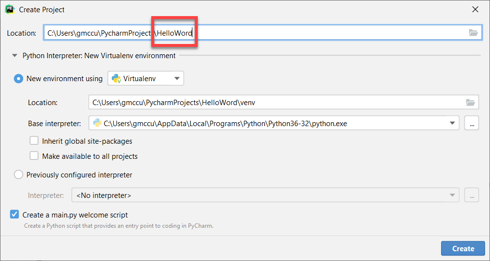
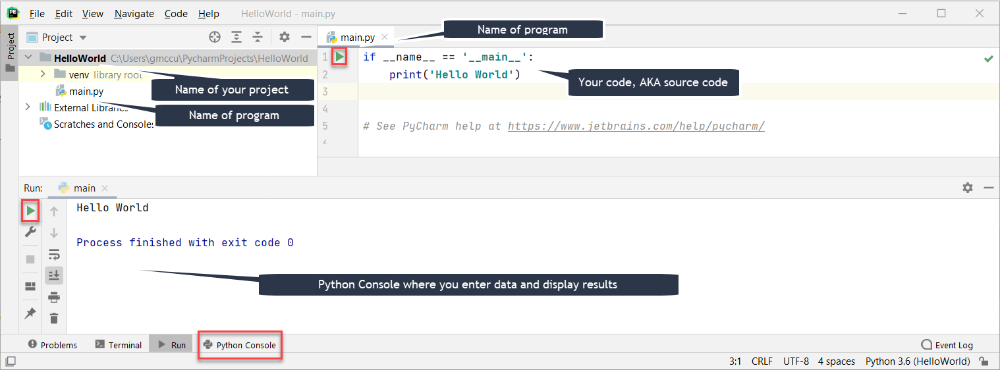

To test that your environment is working as expected, write and execute your first program:

Copy and paste the following lines into main.py:
if __name__ == "__main__":
print("Hello World!")
You should get the following result:
Hello World!
Process finished with exit code 0
Notice the following items in the PyCharm interactive development environment (IDE):

Notice that HelloWorld is a program in a file, main.py. All Python code files have the .py file extension. The program is only 2 lines long. Each line of code is called a statement. Often, we will identify the language syntax (rules) by the kind of statement, e.g. the first line is an if statement and the second line is a print statement.
Even with this simple program there is actually more to discuss later. For now, note that indentation is very important in Python syntax–each block of code must be indented 4 spaces. In this case the block is one line long; it contains the print statement.
If you run the program and the expected output is not displayed in the Python Console, retrace your steps. If that doesn’t help identify the issue, try to use a search engine (like Google) and search for the error you receive.
Submit a screen shot of the IDE after you run HelloWorld and answer the questions: